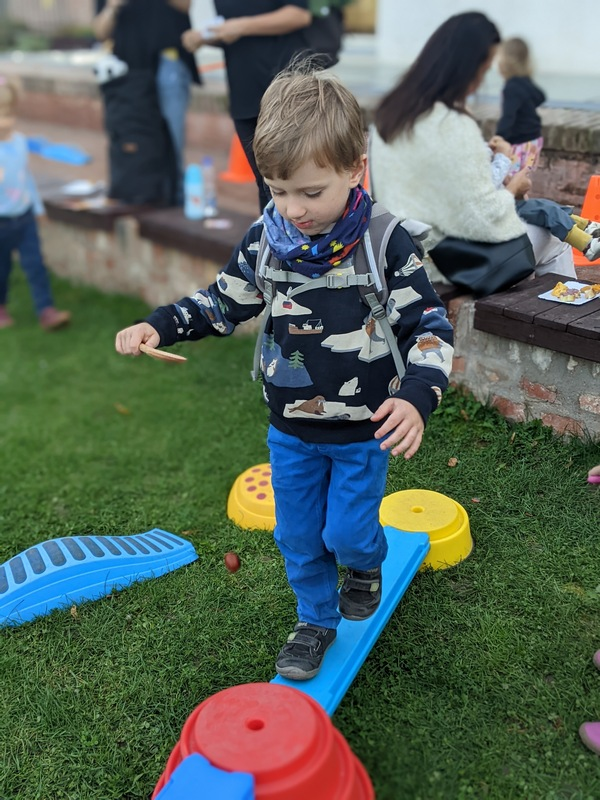
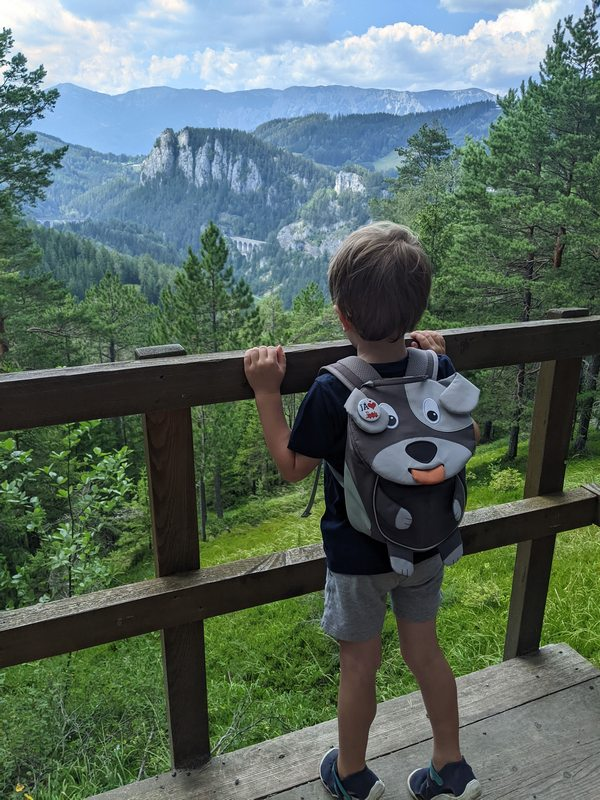

Kdy se tohle stalo?? Vždyť je to včera, co se narodil :)
- Pětileťák Oli váží 17,5 kg.
- Loni na jaře se naučil jezdit na kole (asi na čtvrtý pokus a ještě se zafačovanou rukou, kterou si pořezal ve školce o keramický květináč) a letos v zimě lyžovat.
- Od září navštěvuje státní školku, ve které si sice zvykal o dost déle než v dětské skupince rok předtím, zato dnes už tam má spoustu kamarádů a tráví v ní čas moc rád. O to víc mi trhá srdce, že ho z ní na podzim nejspíš budeme muset kvůli stěhování zase přemístit jinam.
- Spánek je u nás pořád tak nějak stejný. Večerka okolo osmé a budíček cca v 6. Oli je holt ranní ptáče a jiný už to asi nebude :-D Co se nám každopádně už před nějakým časem osvědčilo je zatemňovací roleta. Pokud teď v letních měsících spíme někde, kde ji nemají, vstávání s rozbřeskem nebývá výjimkou 8-)
- S jídlem je to teď občas trochu boj – O. už je mnohem vybíravější, některá jídla, která mi dřív bez problémů jedl, teď jíst odmítá. Pokud mu ale naopak něco chutná, je to stále vděčný strávník, který umí kuchaře i náležitě pochválit, což je motivující :-D Od té doby, co nám po cestě do školky otevřeli úžasnou novou pekárnu, už vzal O. na milost i pečivo. Pořád ale preferuje variantu s máslem a pokud mu na chleba hodlám namazat cokoliv jiného, tváří se dost nedůvěřivě. Ze školky občas nosívá od kamarádů sladkosti, které já bych mu v životě nekoupila. Z toho moc šťastná nejsem, ale nechci v tomto být úplně despotická matka, zkrátka všeho s mírou.

- Jestliže v dětské skupince udělal O. největší posun, co se týče samoobslužnosti, po nástupu do státní školky jsem u něj nejvíc pozorovala rozvoj v oblasti grafomotoriky a kreslení (do té doby opravdu jen čmáral, maximálně nakreslil koleje), naučil se používat sám nůžky, lepidlo a celkově si začal sám vymýšlet různé kreativní úkoly. Oprostila jsem se od nějakých svých představ, jak by měl vypadat výsledek, a nechávám ho prostě jen tvořit - s papíry, lepenkou, washi páskami, samolepkami…
- Celkově jsem s naší státní školkou nakonec moc spokojená, a to i přes počáteční rozpaky. Líbí se mi spousta aktivit, které pro děti pořádají, ať už jsou to divadla, tematická tvoření s rodiči, podzimní jarmark, návštěvy čtecí babičky, kroužky…
- Přijde mi, že na nějaké kreativnější aktivity doma už naprosto není čas. Kolikrát jen přijdeme ze školky, pořešíme jídlo a je čas se chystat do postele. Na druhou stranu máme mnohem víc možností zábavy, chodíme na výstavy, na dětské akce, vídáme se s kamarády.
- Došla jsem do stadia, kdy mám pocit, že O. už vůbec nepotřebuje žádné nové hračky. Samozřejmě k nám z různých kanálů stále nějaké věci proudí, jen my už je jaksi nemáme kam ukládat :-D O. si stejně pořád nejvíc vyhraje s vláčkodráhou a duplem nebo si vymýšlí nějaké své vlastní hry. Jednu dobu měl velkou vášeň pro společenské hry, takže jsme jich pár nakoupili k Vánocům a krátili si jimi dlouhé zimní večery, což bylo fajn zpestření. Obzvlášť karetní hra Spící královny, kterou jsem koupila na doporučení Evky, se u nás doma těší veliké oblibě už téměř rok a vždy ji doprovází bouřlivé emoce :-D
- Mašiny, již tradičně samostatná kapitola :-D Novinkou u nás začalo být sledování pořadů s vlakovou tematikou. Obzvlášť Putování s párou, které jsem kdysi našla na iVysílání, když jsem byla nemocná, bylo mi zle a potřebovala jsem O. nějak zabavit, jsme si doma naprosto zamilovali. O. si ke sledování vždy rozloží svoje vlaková kvarteta a hledá příslušnou parní mašinku. Pořad je to ovšem také edukativní a Oli díky tomu získal i řadu znalostí z oblasti geografie naší vlasti :-D! (Dřív chtěl ty edukační pasáže přeskakovat, teď už se na ně rád dívá). Jinak samozřejmě stále rádi navštěvujeme modelářské výstavy, historické jízdy a odebíráme periodika Českých drah :-D

V Semmeringu - vyhlížíme na viaduktu vlak :)
- Na knihy už teď přes den není tolik času, zato čtení před spaním je našim zavedeným rituálem, kterého se O. tvrdohlavě dožaduje i ve dny, kdy pomalu usíná vestoje. Stále rádi navštěvujeme knihovnu, takže témata knížek se u nás často mění, občas ale O. zaloví i ve vodách naší domácí knihovničky, kam jsem už dávno přemístila své oblíbence z mého dětství, jako Děti z Bullerbynu, Pufa a Mufa nebo milovanou Trnkovu Zahradu, která O. naprosto nadchla :-)
- Během uplynulého roku se O. naučil naprosto ukázkové R. Na výslovnosti Ř zatím pracujeme, i když i to už se občas povede. Na kroužek logopedie jsem ho nepřihlašovala, oproti jiným dětem ve školce či okolí mluví opravdu luxusně, tak se mi to zdálo zbytečné.
- Co se týče dalších nárazových zájmů, měli jsme teď celkem dinosauří období a jednu dobu se O. taky dost zajímal o letce Jana Kašpara (děda mu ukazoval na kroměřížském letišti pamětní desku, kde tenkrát přistál :-). Myslím, že O. už je ve věku, kdy by mohl ocenit návštěvu Technického muzea. Ve školce při probírání tématu Vesmír oslňoval svými znalostmi letu Apollo 11 :-D. Rád si listuje i v Dětské encyklopedii, kde narážíme na různá témata. Poslední dobou také párkrát přišly na přetřes otázky smrti a toho, co bude, až umřeme. Jednou mě O. dojal i rozesmál zároveň dotazem, zda v nebi může „sedět vedle mě“ :-D – došlo mi, že si to představuje asi jako sedadla v kině :-D
- Čím víc poznávám děti Oliho věku, tím víc oceňuju O. nebojácnou povahu, to, jak je s každým hned kamarád (když tu byli na jaře brácha s Jenn, naprosto bez zábran se s nimi bavil, a to dokonce i navzdory angličtině a tomu, že je oba viděl naposled jako rok a půl staré batole), jak je pro každou špatnost (dobře, to mně jako matku taky občas přivádí k šílenství :-D…) Zkrátka má všechno to, co mně chybí. Je to pro mě radost i výzva zároveň, ale mám přání v něm tuhle lehkost bytí nezadusit. Věřím, že díky tomu bude mít o dost lehčí život. Už teď se moc těším na naše další společné kapitoly :-)